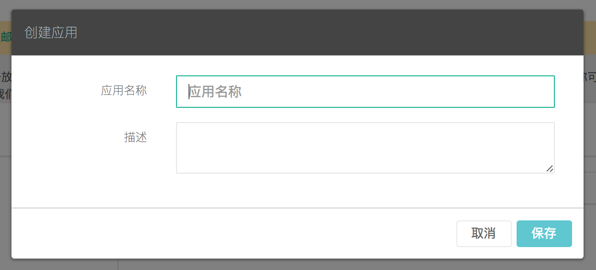
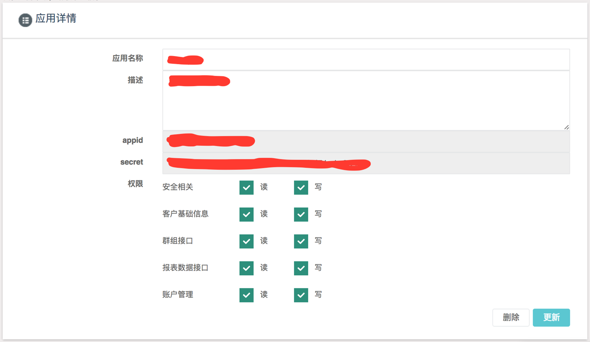

通过ANDROID SDK进行事件采集
1.使用说明
- 本文是 DMHub Android SDK 标准的开发指南文档，用以指导 SDK 的集成和使用，默认读者已经具备一定的 Android 开发能力。
- 本篇指南匹配的 DMHub Android SDK 版本为：v0.3.0 。
- DMHub Android SDK 0.3.0 要求 Java >= 1.7 & Android API >= 9
2. 开发准备
2.1 创建应用
集成 DMHub SDK 之前，您首先需要到 DM Hub 平台创建应用。
2.1.1 进入应用设置页面
点击 DM Hub 平台首页右上角的齿轮图标，选择 开放与集成 选项，进入应用设置页面

2.1.2 新建应用
在应用设置页面点击右上角的 + 新建 按钮，在弹出的创建应用弹出框中填写应用名称和描述后保存。

2.1.3 更新权限设置
创建应用成功之后，即可获得集成 SDK 所需的 appid 和 secret 信息。根据开发需求进行权限设置后，点击右下角的 更新 按钮（注：即使没有更改权限设置，也要进行更新），完成应用创建。

2.2 工程准备
- 集成 OkHttp3 或 Retrofit2 。
- 集成 极光推送 或 个推推送 。
3. 导入 SDK
3.1 添加 jar 包
复制 libs 目录下的 dmhubsdk-android-0.3.0.jar 文件到工程主 module 的 libs 目录下，右键 jar 包，选择 Add As Library... ，将 jar 作为 Library 添加到主 module 中。
3.2 配置 AndroidManifest.xml
3.2.1 配置 SDK 所需权限
<uses-permission android:name="android.permission.INTERNET" />
<uses-permission android:name="android.permission.READ_EXTERNAL_STORAGE" />
<uses-permission android:name="android.permission.WRITE_EXTERNAL_STORAGE" />
<uses-permission android:name="android.permission.ACCESS_NETWORK_STATE" />
<uses-permission android:name="android.permission.ACCESS_WIFI_STATE" />
如果需要获取客户设备的 IMEI 信息，还需要配置：
<uses-permission android:name="android.permission.READ_PHONE_STATE">
添加该权限后，SDK 会默认获取客户设备的 IMEI 信息，并将其作为客户身份添加到客户信息中，可以在客户详情页查看。如果不需要获取客户设备的 IMEI 信息，请不要添加此权限。
3.2.2 配置 SDK 所需组件和参数
在 AndroidManifest.xml 中的 <application> </application> 标签内配置 SDK 所需组件和参数：
<!-- DMHubSDK 监听网络状态的 Receiver 组件 -->
<receiver android:name="com.convertlab.dmhubsdk.NetReceiver">
<intent-filter>
<action android:name="android.net.conn.CONNECTIVITY_CHANGE" />
</intent-filter>
</receiver>
<!--
如果您使用了极光推送，请配置该组件，SDK 会在该组件中记录通知推送相关事件；
如果您没有使用极光推送，则不需要配置该组件。
-->
<receiver
android:name="com.convertlab.dmhubsdk.JPushReceiver"
android:enabled="true"
android:exported="false">
<intent-filter>
<action android:name="cn.jpush.android.intent.REGISTRATION" />
<action android:name="cn.jpush.android.intent.MESSAGE_RECEIVED" />
<action android:name="cn.jpush.android.intent.NOTIFICATION_RECEIVED" />
<action android:name="cn.jpush.android.intent.NOTIFICATION_OPENED" />
<action android:name="cn.jpush.android.intent.CONNECTION" />
<category android:name="您应用的包名" />
</intent-filter>
</receiver>
<!-- DMHubSDK 相关参数 -->
<meta-data android:name="DMHubSDKAppId" android:value="在 DM Hub 平台获得的 appid" />
<meta-data android:name="DMHubSDKSecret" android:value="在 DM Hub 平台获得的 secret" />
如果您是在测试账号下创建的应用，则需要添加配置：
<meta-data android:name="DMHubServer" android:value="http://api.convertwork.cn" />
4. 初始化
在自定义的 Application 中的 onCreate 方法中调用初始化方法：
public class DMHubApp extends Application {
@Override
public void onCreate() {
super.onCreate();
// 初始化 DMHubSDK，SDK 会在初始化时记录打开 App 事件
DMHubSDK.sharedInstance().init(this);
}
}
注：在整个应用程序全局，只需要进行一次初始化。
5. API 使用介绍
5.1 跟踪客户事件 API
1. trackOpenView
跟踪进入视图事件。
- 接口定义
/**
* @param viewName 视图的名称，客户时间轴上的显示为：'进入手机视图 ${viewName}'
*/
public void trackOpenView(@NonNull String viewName);
- 代码示例
public class YourActivity extends Activity {
@Override
protected void onResume() {
super.onResume();
DMHubSDK.sharedInstance().trackOpenView("<viewName>");
}
}
2. track
跟踪客户自定义事件。
注：该接口调用之前需要先根据业务需求在 DM Hub 后台新建自定义事件，在新建自定义事件时，还可以根据需要添加自定义属性。
- 接口定义
/**
* @param eventId 与 DM Hub 中新建的自定义事件对应的事件 Id
* @param targetName 对于自定义事件，客户时间轴上只会显示 targetName，相当于事件标题
* @param targetId 客户触发该事件对应的目标(如按钮)的 Id
* @param properties 事件的自定义属性，必须以在 DM Hub 中新建自定义事件时添加的自定义属性作为 key
*/
public void track(@NonNull String eventId, @NonNull String targetName, String targetId, Properties properties);
- 代码示例
public class FirstActivity extends Activity {
@Override
protected void onCreate(Bundle savedInstanceState) {
super.onCreate(savedInstanceState);
if (<首次打开 App>) {
Properties properties = new Properties();
properties.setProperty("<自定义属性>", "<首次打开 App 事件对应的自定义属性值>");
DMHubSDK.sharedInstance().track(
"<eventId>",
"<targetName，如：'首次打开 Android App'>",
"<targetId，客户触发首次打开 App 事件对应的目标为 App，可以传入应用包名作为 targetId>",
properties
);
}
}
}
5.2 使用极光推送相关 API
如果您使用了极光推送，则可能需要使用极光推送相关 API。
1. isFromDMHubJPush
判断接收到的 JPush 推送是否来自 DM Hub 平台。
- 接口定义
/**
* @param intent 自定义的 JPush 广播接收器收到的 intent
*
* @return 如果传入的 intent 对应的推送来自 DM Hub 平台，返回 true；否则，返回 false
*/
public boolean isFromDMHubJPush(Intent intent);
- 代码示例
public class YourReceiver extends BroadcastReceiver {
@Override
public void onReceive(Context context, Intent intent) {
boolean fromDMHub = DMHubSDK.sharedInstance().isFromDMHubJPush(intent);
}
}
5.3 使用个推推送相关 API
如果您使用了个推推送，则必须根据以下文档调用相关 API。
1. fetchGeTuiClientId
将获取到的个推 clientId 传入 DMHubSDK。
- 接口定义
public void fetchGeTuiClientId(@NonNull String clientId);
- 代码示例
public class YourIntentService extends GTIntentService {
@Override
public void onReceiveClientId(Context context, String clientid) {
DMHubSDK.sharedInstance().fetchGeTuiClientId(clientid);
}
}
2. fetchGeTuiMessage
将接收到的个推推送通知的 payload 传入 DMHubSDK。
- 接口定义
/**
* @param payload msg 中的 payload
*
* @return 如果传入的 payload 对应的推送来自 DM Hub 平台，返回 true；否则，返回 false
*/
public boolean fetchGeTuiMessage(@NonNull String payload);
- 代码示例
public class YourIntentService extends GTIntentService {
@Override
public void onReceiveMessageData(Context context, GTTransmitMessage msg) {
byte[] payload = msg.getPayload();
if (payload != null) {
boolean fromDMHub = DMHubSDK.sharedInstance().fetchGeTuiMessage(new String(payload));
}
}
}
6. 混淆规则
在工程的混淆规则文件中添加如下规则：
# DMHubSDK
-dontwarn com.convertlab.dmhubsdk.**
-keep class com.convertlab.dmhubsdk.** { *; }
7. 技术支持
- 在线客服：在 DM Hub 平台右下角进行客服咨询
- 电子邮件：support@convertlab.com